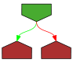

// Copyright 2010 The Go Authors. All rights reserved.
// Use of this source code is governed by a BSD-style
// license that can be found in the LICENSE file.
package json
import (
"bytes"
"errors"
"io"
)
// A Decoder reads and decodes JSON values from an input stream.
type Decoder struct {
r io.Reader
buf []byte
d decodeState
scanp int // start of unread data in buf
scanned int64 // amount of data already scanned
scan scanner
err error
tokenState int
tokenStack []int
}
// NewDecoder returns a new decoder that reads from r.
//
// The decoder introduces its own buffering and may
// read data from r beyond the JSON values requested.
|
|
func NewDecoder(r io.Reader) *Decoder {
return &Decoder{r: r}
}
// UseNumber causes the Decoder to unmarshal a number into an interface{} as a
// Number instead of as a float64.
|

|
func (dec *Decoder) UseNumber() { dec.d.useNumber = true }
// DisallowUnknownFields causes the Decoder to return an error when the destination
// is a struct and the input contains object keys which do not match any
// non-ignored, exported fields in the destination.
|

|
func (dec *Decoder) DisallowUnknownFields() { dec.d.disallowUnknownFields = true }
// Decode reads the next JSON-encoded value from its
// input and stores it in the value pointed to by v.
//
// See the documentation for Unmarshal for details about
// the conversion of JSON into a Go value.
|

|
func (dec *Decoder) Decode(v any) error {
if dec.err != nil {
return dec.err
}
if err := dec.tokenPrepareForDecode(); err != nil {
return err
}
if !dec.tokenValueAllowed() {
return &SyntaxError{msg: "not at beginning of value", Offset: dec.InputOffset()}
}
// Read whole value into buffer.
n, err := dec.readValue()
if err != nil {
return err
}
dec.d.init(dec.buf[dec.scanp : dec.scanp+n])
dec.scanp += n
// Don't save err from unmarshal into dec.err:
// the connection is still usable since we read a complete JSON
// object from it before the error happened.
err = dec.d.unmarshal(v)
// fixup token streaming state
dec.tokenValueEnd()
return err
}
// Buffered returns a reader of the data remaining in the Decoder's
// buffer. The reader is valid until the next call to Decode.
|
|
func (dec *Decoder) Buffered() io.Reader {
return bytes.NewReader(dec.buf[dec.scanp:])
}
// readValue reads a JSON value into dec.buf.
// It returns the length of the encoding.
|

|
func (dec *Decoder) readValue() (int, error) {
dec.scan.reset()
scanp := dec.scanp
var err error
Input:
// help the compiler see that scanp is never negative, so it can remove
// some bounds checks below.
for scanp >= 0 {
// Look in the buffer for a new value.
for ; scanp < len(dec.buf); scanp++ {
c := dec.buf[scanp]
dec.scan.bytes++
switch dec.scan.step(&dec.scan, c) {
case scanEnd:
// scanEnd is delayed one byte so we decrement
// the scanner bytes count by 1 to ensure that
// this value is correct in the next call of Decode.
dec.scan.bytes--
break Input
case scanEndObject, scanEndArray:
// scanEnd is delayed one byte.
// We might block trying to get that byte from src,
// so instead invent a space byte.
if stateEndValue(&dec.scan, ' ') == scanEnd {
scanp++
break Input
}
case scanError:
dec.err = dec.scan.err
return 0, dec.scan.err
}
}
// Did the last read have an error?
// Delayed until now to allow buffer scan.
if err != nil {
if err == io.EOF {
if dec.scan.step(&dec.scan, ' ') == scanEnd {
break Input
}
if nonSpace(dec.buf) {
err = io.ErrUnexpectedEOF
}
}
dec.err = err
return 0, err
}
n := scanp - dec.scanp
err = dec.refill()
scanp = dec.scanp + n
}
return scanp - dec.scanp, nil
}
|
|
func (dec *Decoder) refill() error {
// Make room to read more into the buffer.
// First slide down data already consumed.
if dec.scanp > 0 {
dec.scanned += int64(dec.scanp)
n := copy(dec.buf, dec.buf[dec.scanp:])
dec.buf = dec.buf[:n]
dec.scanp = 0
}
// Grow buffer if not large enough.
const minRead = 512
if cap(dec.buf)-len(dec.buf) < minRead {
newBuf := make([]byte, len(dec.buf), 2*cap(dec.buf)+minRead)
copy(newBuf, dec.buf)
dec.buf = newBuf
}
// Read. Delay error for next iteration (after scan).
n, err := dec.r.Read(dec.buf[len(dec.buf):cap(dec.buf)])
dec.buf = dec.buf[0 : len(dec.buf)+n]
return err
}
|
|
func nonSpace(b []byte) bool {
for _, c := range b {
if !isSpace(c) {
return true
}
}
return false
}
// An Encoder writes JSON values to an output stream.
type Encoder struct {
w io.Writer
err error
escapeHTML bool
indentBuf *bytes.Buffer
indentPrefix string
indentValue string
}
// NewEncoder returns a new encoder that writes to w.
|
|
func NewEncoder(w io.Writer) *Encoder {
return &Encoder{w: w, escapeHTML: true}
}
// Encode writes the JSON encoding of v to the stream,
// followed by a newline character.
//
// See the documentation for Marshal for details about the
// conversion of Go values to JSON.
|

|
func (enc *Encoder) Encode(v any) error {
if enc.err != nil {
return enc.err
}
e := newEncodeState()
err := e.marshal(v, encOpts{escapeHTML: enc.escapeHTML})
if err != nil {
return err
}
// Terminate each value with a newline.
// This makes the output look a little nicer
// when debugging, and some kind of space
// is required if the encoded value was a number,
// so that the reader knows there aren't more
// digits coming.
e.WriteByte('\n')
b := e.Bytes()
if enc.indentPrefix != "" || enc.indentValue != "" {
if enc.indentBuf == nil {
enc.indentBuf = new(bytes.Buffer)
}
enc.indentBuf.Reset()
err = Indent(enc.indentBuf, b, enc.indentPrefix, enc.indentValue)
if err != nil {
return err
}
b = enc.indentBuf.Bytes()
}
if _, err = enc.w.Write(b); err != nil {
enc.err = err
}
encodeStatePool.Put(e)
return err
}
// SetIndent instructs the encoder to format each subsequent encoded
// value as if indented by the package-level function Indent(dst, src, prefix, indent).
// Calling SetIndent("", "") disables indentation.
|
|
func (enc *Encoder) SetIndent(prefix, indent string) {
enc.indentPrefix = prefix
enc.indentValue = indent
}
// SetEscapeHTML specifies whether problematic HTML characters
// should be escaped inside JSON quoted strings.
// The default behavior is to escape &, <, and > to \u0026, \u003c, and \u003e
// to avoid certain safety problems that can arise when embedding JSON in HTML.
//
// In non-HTML settings where the escaping interferes with the readability
// of the output, SetEscapeHTML(false) disables this behavior.
|

|
func (enc *Encoder) SetEscapeHTML(on bool) {
enc.escapeHTML = on
}
// RawMessage is a raw encoded JSON value.
// It implements Marshaler and Unmarshaler and can
// be used to delay JSON decoding or precompute a JSON encoding.
type RawMessage []byte
// MarshalJSON returns m as the JSON encoding of m.
|

|
func (m RawMessage) MarshalJSON() ([]byte, error) {
if m == nil {
return []byte("null"), nil
}
return m, nil
}
// UnmarshalJSON sets *m to a copy of data.
|

|
func (m *RawMessage) UnmarshalJSON(data []byte) error {
if m == nil {
return errors.New("json.RawMessage: UnmarshalJSON on nil pointer")
}
*m = append((*m)[0:0], data...)
return nil
}
var _ Marshaler = (*RawMessage)(nil)
var _ Unmarshaler = (*RawMessage)(nil)
// A Token holds a value of one of these types:
//
// Delim, for the four JSON delimiters [ ] { }
// bool, for JSON booleans
// float64, for JSON numbers
// Number, for JSON numbers
// string, for JSON string literals
// nil, for JSON null
//
type Token any
const (
tokenTopValue = iota
tokenArrayStart
tokenArrayValue
tokenArrayComma
tokenObjectStart
tokenObjectKey
tokenObjectColon
tokenObjectValue
tokenObjectComma
)
// advance tokenstate from a separator state to a value state
|

|
func (dec *Decoder) tokenPrepareForDecode() error {
// Note: Not calling peek before switch, to avoid
// putting peek into the standard Decode path.
// peek is only called when using the Token API.
switch dec.tokenState {
case tokenArrayComma:
c, err := dec.peek()
if err != nil {
return err
}
if c != ',' {
return &SyntaxError{"expected comma after array element", dec.InputOffset()}
}
dec.scanp++
dec.tokenState = tokenArrayValue
case tokenObjectColon:
c, err := dec.peek()
if err != nil {
return err
}
if c != ':' {
return &SyntaxError{"expected colon after object key", dec.InputOffset()}
}
dec.scanp++
dec.tokenState = tokenObjectValue
}
return nil
}
|
|
func (dec *Decoder) tokenValueAllowed() bool {
switch dec.tokenState {
case tokenTopValue, tokenArrayStart, tokenArrayValue, tokenObjectValue:
return true
}
return false
}
|
|
func (dec *Decoder) tokenValueEnd() {
switch dec.tokenState {
case tokenArrayStart, tokenArrayValue:
dec.tokenState = tokenArrayComma
case tokenObjectValue:
dec.tokenState = tokenObjectComma
}
}
// A Delim is a JSON array or object delimiter, one of [ ] { or }.
type Delim rune
|
|
func (d Delim) String() string {
return string(d)
}
// Token returns the next JSON token in the input stream.
// At the end of the input stream, Token returns nil, io.EOF.
//
// Token guarantees that the delimiters [ ] { } it returns are
// properly nested and matched: if Token encounters an unexpected
// delimiter in the input, it will return an error.
//
// The input stream consists of basic JSON values—bool, string,
// number, and null—along with delimiters [ ] { } of type Delim
// to mark the start and end of arrays and objects.
// Commas and colons are elided.
|

|
func (dec *Decoder) Token() (Token, error) {
for {
c, err := dec.peek()
if err != nil {
return nil, err
}
switch c {
case '[':
if !dec.tokenValueAllowed() {
return dec.tokenError(c)
}
dec.scanp++
dec.tokenStack = append(dec.tokenStack, dec.tokenState)
dec.tokenState = tokenArrayStart
return Delim('['), nil
case ']':
if dec.tokenState != tokenArrayStart && dec.tokenState != tokenArrayComma {
return dec.tokenError(c)
}
dec.scanp++
dec.tokenState = dec.tokenStack[len(dec.tokenStack)-1]
dec.tokenStack = dec.tokenStack[:len(dec.tokenStack)-1]
dec.tokenValueEnd()
return Delim(']'), nil
case '{':
if !dec.tokenValueAllowed() {
return dec.tokenError(c)
}
dec.scanp++
dec.tokenStack = append(dec.tokenStack, dec.tokenState)
dec.tokenState = tokenObjectStart
return Delim('{'), nil
case '}':
if dec.tokenState != tokenObjectStart && dec.tokenState != tokenObjectComma {
return dec.tokenError(c)
}
dec.scanp++
dec.tokenState = dec.tokenStack[len(dec.tokenStack)-1]
dec.tokenStack = dec.tokenStack[:len(dec.tokenStack)-1]
dec.tokenValueEnd()
return Delim('}'), nil
case ':':
if dec.tokenState != tokenObjectColon {
return dec.tokenError(c)
}
dec.scanp++
dec.tokenState = tokenObjectValue
continue
case ',':
if dec.tokenState == tokenArrayComma {
dec.scanp++
dec.tokenState = tokenArrayValue
continue
}
if dec.tokenState == tokenObjectComma {
dec.scanp++
dec.tokenState = tokenObjectKey
continue
}
return dec.tokenError(c)
case '"':
if dec.tokenState == tokenObjectStart || dec.tokenState == tokenObjectKey {
var x string
old := dec.tokenState
dec.tokenState = tokenTopValue
err := dec.Decode(&x)
dec.tokenState = old
if err != nil {
return nil, err
}
dec.tokenState = tokenObjectColon
return x, nil
}
fallthrough
default:
if !dec.tokenValueAllowed() {
return dec.tokenError(c)
}
var x any
if err := dec.Decode(&x); err != nil {
return nil, err
}
return x, nil
}
}
}
|
|
func (dec *Decoder) tokenError(c byte) (Token, error) {
var context string
switch dec.tokenState {
case tokenTopValue:
context = " looking for beginning of value"
case tokenArrayStart, tokenArrayValue, tokenObjectValue:
context = " looking for beginning of value"
case tokenArrayComma:
context = " after array element"
case tokenObjectKey:
context = " looking for beginning of object key string"
case tokenObjectColon:
context = " after object key"
case tokenObjectComma:
context = " after object key:value pair"
}
return nil, &SyntaxError{"invalid character " + quoteChar(c) + context, dec.InputOffset()}
}
// More reports whether there is another element in the
// current array or object being parsed.
|
|
func (dec *Decoder) More() bool {
c, err := dec.peek()
return err == nil && c != ']' && c != '}'
}
|
|
func (dec *Decoder) peek() (byte, error) {
var err error
for {
for i := dec.scanp; i < len(dec.buf); i++ {
c := dec.buf[i]
if isSpace(c) {
continue
}
dec.scanp = i
return c, nil
}
// buffer has been scanned, now report any error
if err != nil {
return 0, err
}
err = dec.refill()
}
}
// InputOffset returns the input stream byte offset of the current decoder position.
// The offset gives the location of the end of the most recently returned token
// and the beginning of the next token.
|
|
func (dec *Decoder) InputOffset() int64 {
return dec.scanned + int64(dec.scanp)
}
|

|